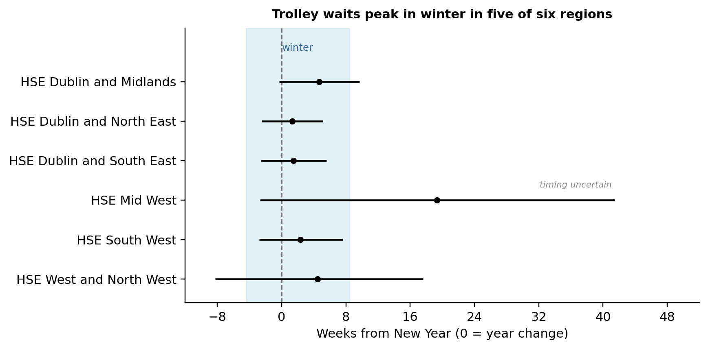

Draft presentation of thesis results — phases, events, and the selected model.
Draft for review. Mirrors the thesis presentation. Once approved, this becomes the dashboard findings page (Dash) and ships via the bash snapshot.
Per-region posterior of the annual-cycle peak week, relative to the New Year (0 = year change). Points are posterior means, bars are 95% credible intervals. The shaded band is winter (New Year ± 2 months).

| Region | Mean peak (wk from NY) | 95% CI | P(winter) |
|---|---|---|---|
| HSE Dublin and Midlands | +4.7 | [-0.3, +9.7] | 0.933 |
| HSE Dublin and North East | +1.3 | [-2.5, +5.1] | 0.997 |
| HSE Dublin and South East | +1.5 | [-2.6, +5.6] | 0.995 |
| HSE Mid West | +19.4 | [-2.7, +41.4] | 0.129 |
| HSE South West | +2.3 | [-2.8, +7.6] | 0.979 |
| HSE West and North West | +4.5 | [-8.3, +17.6] | 0.716 |
Mid West peak is poorly identified (wide CI), consistent with its disrupted series.
A reset of care at UH Limerick, the only HSE Mid West emergency department, where inpatient and outpatient backlogs were defered from 2024-08-08 to 2024-08-19 to focus on day cases.
A combination of discharching patients and delayed care that occurs during major holidays.
AR(2) baseline with annual cycle, region-specific New Year, and the Mid West reset. DIC 5336.9 (deviance 5225.0, pD 111.8).
| Rank | Region | Mean rank | SD |
|---|---|---|---|
| 1 | HSE Mid West | 1.00 | 0.02 |
| 2 | HSE West and North West | 2.00 | 0.02 |
| 3 | HSE South West | 3.03 | 0.17 |
| 4 | HSE Dublin and Midlands | 3.97 | 0.17 |
| 5 | HSE Dublin and South East | 5.00 | 0.03 |
| 6 | HSE Dublin and North East | 6.00 | 0.01 |
Rank 1 = highest posterior trolley burden (per 10k population).